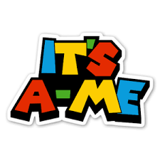
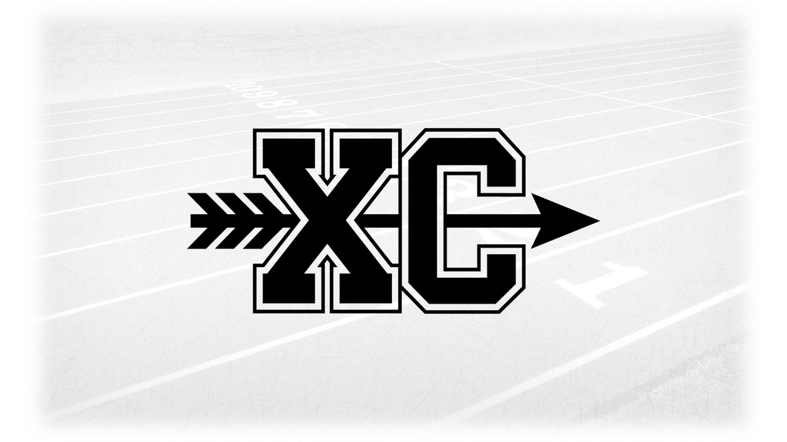
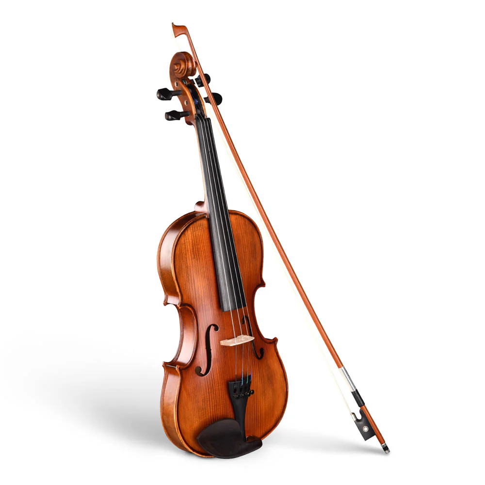
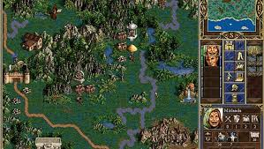

I am 15 years old, and I am currently in 10th grade at CCA. I have an older brother named Ethan who is already out of college and lives in Los Angeles, and a younger sister named Athena in 5th grade. I am Christian, and my faith means a lot to me in my personal life. Some of the things I am passionate about are music, engineering, coding, and running.

I enjoy playing violin, both solo and in an orchestra. I have participated in both CCA orchestra and another youth orchestra, MMYO. I also enjoy running: I participate in cross-country in the fall and track in the spring, though I am not doing track this year. I used to regularly participate in musical theater so I also enjoy acting and improv, and I am doing the spring show this semester. I am active in many clubs, including an engineering club, a Christian club, the CCA Red Cross club, and theater club.


In my free time, I enjoy playing video games, listening to music, and reading. I like PC games from the 90s era, of which one of my favorite games is Heroes of Might and Magic 3. I enjoy listening to music while I do tasks or as a pastime, and my favorite genre is classical. I also enjoy reading and learning about various topics such as literature, history, and coding.
